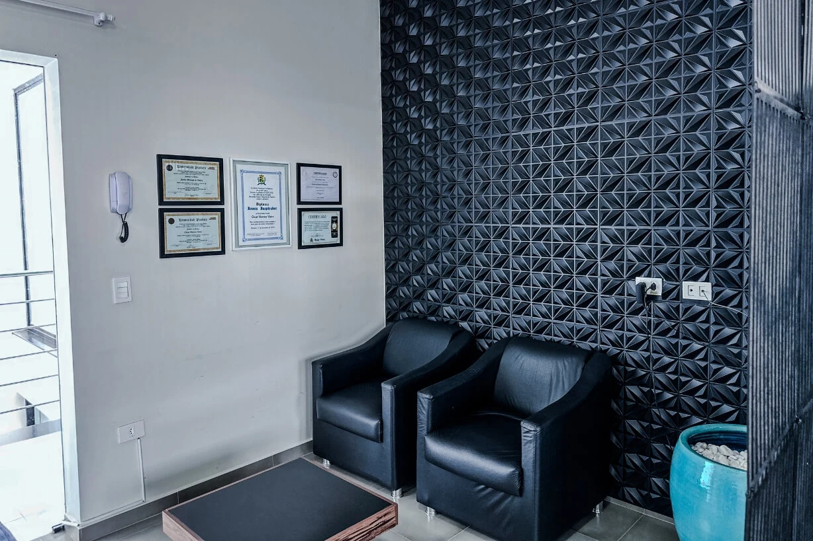
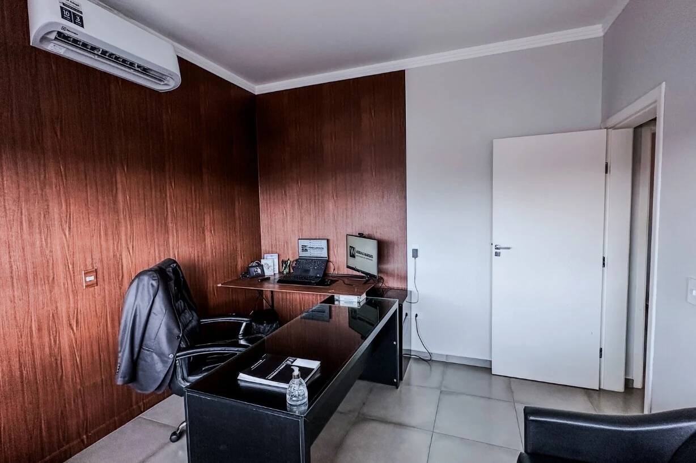
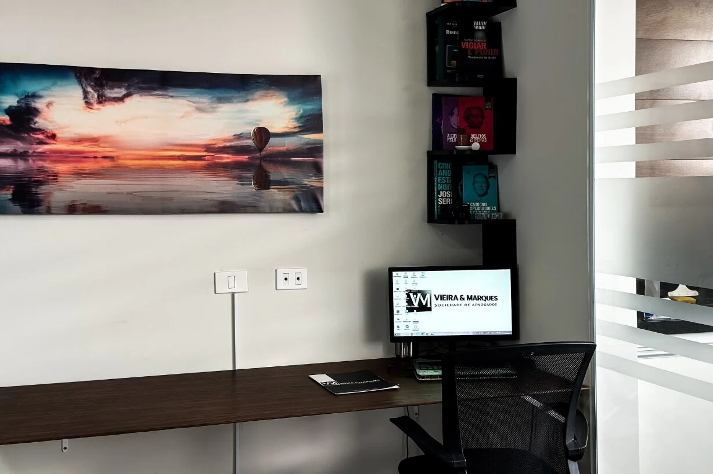

Atuamos em Boituva e Sorocaba, e de forma online em todo o Brasil, em questões de família, sucessões, defesa criminal, trabalho, previdência e relações civis. Antes de qualquer decisão, o primeiro passo é entender o que está em jogo no seu caso.
Cada área reúne situações concretas que atendemos. Se você não souber onde seu caso se encaixa, comece por qualquer uma delas — na conversa inicial identificamos o caminho aplicável.
Não sabe em qual área o seu caso se encaixa? Descreva sua situação para a nossa equipe.
A maior parte das dúvidas jurídicas não começa em um processo: começa em uma conversa. Divórcios, inventários, acusações criminais, demissões e pedidos negados pelo INSS chegam ao escritório cercados de urgência e informação desencontrada.
Nosso trabalho começa por organizar o cenário: o que a lei prevê, quais caminhos existem e quais consequências cada um deles carrega. A partir disso, a atuação pode ser preventiva, extrajudicial ou judicial — sempre com o dever de informar antes de agir e sem prometer resultados.


Um escritório organizado por núcleos de conhecimento, com advogados inscritos na OAB/SP respondendo diretamente por cada área. A orientação vem antes da estratégia — e a estratégia vem antes do processo.
Rua Benedita Sanson Labronici, 180 — Chácara Labronici.
Atendimento presencial na região metropolitana de Sorocaba.
Reuniões por vídeo e envio digital de documentos.
Todos com inscrição ativa na OAB/SP e áreas definidas de atuação.
Precisa de orientação jurídica?
Converse com nossa equipe para entendermos sua situação e apresentarmos os caminhos aplicáveis ao seu caso.
Preencha o formulário ao lado e conte brevemente sua situação. Um advogado do escritório avalia a mensagem e retorna com os próximos passos aplicáveis ao seu caso.
Obrigado, {{ nomeEnviado }}. Sua mensagem foi encaminhada à equipe. O retorno é feito pelo canal que você informou, em ordem de chegada.
Formação, inscrição na OAB e áreas de atuação de cada profissional — informação verificável, não adjetivos.
{{ p.atuacao }}
Passe o mouse sobre cada profissional para ver formação e áreas de atuação.
{{ p.atuacao }}
Presidência da Comissão de Direito de Família e Sucessões da OAB de Boituva (2022/2024) — Dr. Oscar Moreira Vieira.
Pós-graduações concluídas e em curso em Família e Sucessões, Direito Penal, Processo Penal, Previdenciário, Advocacia Cível e Direito Médico.
Títulos de Jovem Inspirador e Jovem Inspiradora concedidos pela Câmara Municipal de Boituva.
Nenhuma etapa exige que você já saiba nomear o seu problema jurídico.
{{ e.texto }}
{{ e.texto }}
Avaliações públicas no perfil do escritório no Google — 147 no total.
“{{ d.texto }}”
pendente importar mais avaliações reais do perfil do Google para preencher as colunas.
A sede em Boituva atende presencialmente a região; Sorocaba concentra o atendimento na região metropolitana. Para clientes de outras cidades e estados, o acompanhamento é feito integralmente à distância.

{{ destaque.resumo }}
Clique em qualquer imagem para ampliar e navegar pela galeria.
{{ galeriaAtual.desc }}
Respostas gerais, de caráter informativo. A avaliação de cada caso depende dos documentos e das circunstâncias concretas.
{{ f.resposta }}
Sua dúvida não está aqui? Descreva sua situação para a nossa equipe.
Rua Benedita Sanson Labronici, 180 — Chácara Labronici, 18556-048
(15) 3347-0189
pendente endereço completo e telefone da unidade